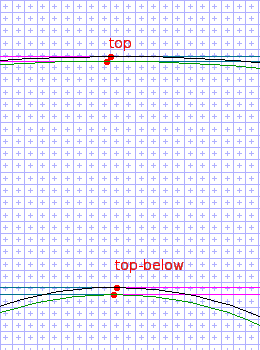
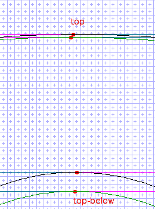

Control Values
A control value is a specialized variable consulted by TrueType instructions that position points precise distances from the grid origin or from other points. The TrueType instructions that use control values are MIRP and MIAP; the Xgridfit instructions that use them are <mirp>, <miap>, <move> and <diagonal-stem>.
All control values are global--visible to all functions and glyph programs, and also the pre-program. (But see below.) Control values are defined by <control-value> elements; these are top-level elements (children of <xgridfit>).
A <control-value> element looks like this:
<control-value name="lc-vert-stem" value="230"/>
The name attribute names the control value, and value is a distance in "font units," the units of the grid on which the font was designed (for TrueType fonts, usually 2048 units per em, but frequently 1000, as in PostScript Type 1 fonts). Before any of your programming runs, the TrueType engine converts all control values to the units of the current raster grid. The numbers you supply must be integers; but by the time your <pre-program> runs, they are "f26dot6" fixed-point numbers. Your <pre-program> may make any necessary adjustments by rounding these numbers, applying deltas to them, or setting new values.
Put a control value to use by passing its name to a TrueType instruction--in Xgridfit, usually via the distance attribute of the <move> element:
<move distance="lc-horz-thin-curve">
<reference>
<point num="top"/>
</reference>
<point num="top-below"/>
</move>
This element moves the point "top-below" along the freedom vector until it is positioned the distance "lc-horz-thin-curve" (as measured along the projection vector) from the reference point "top." Notice how the name "lc-horz-thin-curve" suggests a standard measurement that is likely to occur repeatedly in a font. In fact, the thin curves at the tops or bottoms of certain characters (e.g. 0 and o) may differ slightly in width; but at low resolutions such slight differences can get magnified, causing the font to look blobby. One important function of control values is to standardize such approximately equal distances.
Simulating Local Control Values
Though all control values are global, you can simulate local variables by reserving certain control values for local use and assigning them names within the glyph program. For example, if you want to reserve two control values for local use, define these somewhere in your list of global control values:
<control-value name="cvt-local-1" value="0"/>
<control-value name="cvt-local-2" value="0"/>
These same two control values can be assigned different values by various glyph programs. Simply rename them with <alias> elements among the declarations at the top of the glyph program:
<alias name="thin-diagonal" target="cvt-local-1"/>
<alias name="thick-diagonal" target="cvt-local-2"/>
Now use <set-control-value> to assign values to these control values. By default this element uses font units (the units of the grid on which you designed your font--usually 1000 or 2048 units per em).
<set-control-value name="thin-diagonal" value="64"/>
<set-control-value name="thick-diagonal" value="114"/>
Now you can use the names you have assigned these control values as you would the name of any control value.
The Control Value Cut-in
The normalizing function of the control value is desirable only at low resolutions. Slight irregularities (assuming they are part of the font's design) should be allowed to emerge at higher resolutions. The mechanism for permitting this to take place is the control value cut-in. The cut-in is an F26dot6 fixed-point number, set via the <set-control-value-cut-in> and <with-control-value-cut-in> elements; the cut-in attribute of the <mirp>, <miap>, <move> and <diagonal-stem> elements determines whether the cut-in is consulted when executing those instructions. The cut-in is used by default, so you only need to specify the cut-in attribute when its value is "no."
When executing the MIRP or MIAP instruction, the TrueType engine compares the cut-in to the difference between the distance in the control value table and the distance in the original outline. If this difference is greater than the value of the cut-in, the original distance is used; otherwise the distance is that of the control value.
For an illustration, let's return to the example of the <move> element above. If executed with the default cut-in value of 17/16 (1.0625) at 500 pixels per em, the original distance is used in preference to the control value, and the result is as in the leftmost figure (where the original outline is in black and the gridfitted outline in green). If the cut-in is set at 5.0p and the same instruction is executed, the control value is used rather than the original distance, with the result that the gridfitted outline differs significantly from the original.
|  |  |
By contrast, if we were to make the same experiment at 50 pixels per em, the outlines would look the same, since the control value would be used in both cases.
Elements Relating to Control Values
The name of a control value can be used in many contexts. In an arithmetic element, the name always resolves to the actual value of the control value. In an expression, on the other hand, it always resolves to the index of the control value (its position in the table of control values; the number that must be passed to the MIRP or MIAP instruction). You must use the control-value() operator if you wish to reference the actual value in an expression.
Probably the arithmetic element used most often to operate on a control value is <round>. In the <pre-program> it is common to round frequently used control values; this instruction will do it:
<round value="lc-vert-stem"/>
That element does the same as this, which uses an expression in the source attribute:
<set-equal target="lc-vert-stem"
source="round(control-value(lc-vert-stem))"/>
or this, which does essentially the same job:
<set-control-value name="lc-vert-stem" unit="pixel"
value="round(control-value(lc-vert-stem))"/>
<control-value>
The font's Control Value Table is built from the <control-value> elements. Each <control-value> has a name (which must be unique) and a numerical value. The index of the <control-value> is generated by Xgridfit, and no attempt should be made to predict it: Xgridfit instructions should use only the names of <control-value>s, though the index may be derived and used at run time.
<set-control-value>
<with-control-value>
You can assign a value to a control value anywhere: in the <pre-program>, a <function>, or a <glyph> program. The value you assign can be either in font units (the units of the grid on which you designed the font) or in pixel units (the grid on which the glyph is now being rasterized). To specify which, include the attribute unit="font" or unit="pixel" ("font" is the default). You must specify the name of the control value with the name attribute and the value (an integer in font units or an "F26Dot6" number in pixel units) with the value attribute.
Use <with-control-value>, which takes attributes exactly like those of <set-control-value>, to assign a control value to be used only within the <with-control-value> element. After this element, the value will be the same as it was before.
<set-control-value-cut-in>
<with-control-value-cut-int>
A distance in 64ths of a pixel. If the difference between a distance from a <control-value> element and the original distance is greater than this, the original distance is used. The effect is generally to use the <control-value> distance at low resolutions and the original distance at high resolutions. This can be used to promote evenness at small sizes, where a 1-pixel difference between the width of (say) p and b can look bad. The default value is 17/16: that is, 1.0625p or 68.
<control-value-index>
Assigns the index of a control value to a variable. Use this if you need to get such an index for any reason, since the <set-equal> instruction yields the value, not the index, of a control value.